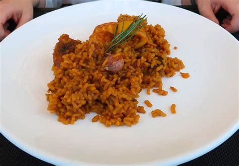

Inicio
Sobre mí
Recetas
Contacto
Otras Cosas
Arroz a la Ampurdanesa

⏰
Tiempo total:
1 hora
Ingredientes
1/2 kilo de arroz
1/2 kilo de conejo
1 kilo y 1/2 de pollo
1/2 kilo de butifarra catalana
1/4 de litro de aceite de oliva
125 gramos de manteca de cerdo
1/4 de kilo de setas rovellons
1/4 de kilo de tomates maduros
2 cebollas medianas
4 dientes de ajo
50 gramos de almendras tostadas
Azafrán
Sal
Preparación
1.
Para el arroz a la ampurdanesa, comience limpiando y cortando el conejo y el pollo en trozos pequeños.
2.
Limpie las setas bajo agua corriente, eliminando la tierra, séquelas con un paño y trocéelas.
3.
En una paellera, caliente el aceite y la manteca de cerdo. Añada los trozos de pollo y conejo, dorándolos bien.
4.
Agregue el ajo picado y los tomates pelados y triturados. Cocine a fuego lento durante 15 minutos, removiendo ocasionalmente, y añada sal al gusto.
5.
Hornee la butifarra a 150 °C durante 10 minutos, córtela en rodajas y añádala a la paella.
6.
Eche el arroz, remueva bien y sofríalo durante 2-3 minutos.
7.
Prepare una picada en un mortero con las almendras, el perejil y el azafrán. Añádala a la paella y mezcle bien.
8.
Agregue las setas y doble cantidad de agua que de arroz. Deje hervir a fuego fuerte durante 10 minutos.
9.
Transfiera la paellera al horno y hornee hasta que el arroz esté seco y suelto, unos 10 minutos.
Autor: Recetas Caseras
Consejos:
Acompañe con un vino tinto de la región para realzar los sabores tradicionales.
Recetas